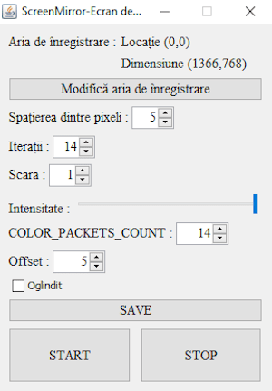
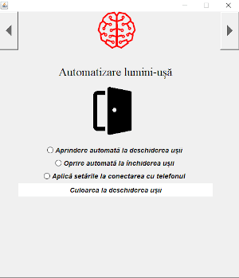

Prezentare generală
Controlează led strip-uri de orice fel prin interfața desktop oferită de Smart Home System, joacă-te cu animații și alte funcții implementate în acest soft
Funcții și utilizare
Tray icon
Programul pornește prima dată in system tray, cu un click dreapta pe iconița apare meniul cu opțiuni
Meniul
Din acest meniu se pot accesa majoritatea setarilor si funcțiilor.
Conectare
Această fereastră este folosită pentru a te conecta direct la modulul bluetooth, există și posibilitatea de a redirecționa conexiunea cu modulul prin telefon, mai multe detalii aici
Setări animații
Poti sa alegi și să customizezi diferite animatii pentru led strip-uri
Screen Mirror
Această animație împarte ecranul în mai multe secțiuni verticale și redă culoarea acelor secțiuni prin leduri, totul este customizabil
Setări S.M.
Setări ușă
Funcția de a modifica ce se întâmplă la închiderea/deschiderea ușii este prezentă și în aplicația desktop
Panou culori
Schimbă culoarea led-urilor cu această interfață simplă